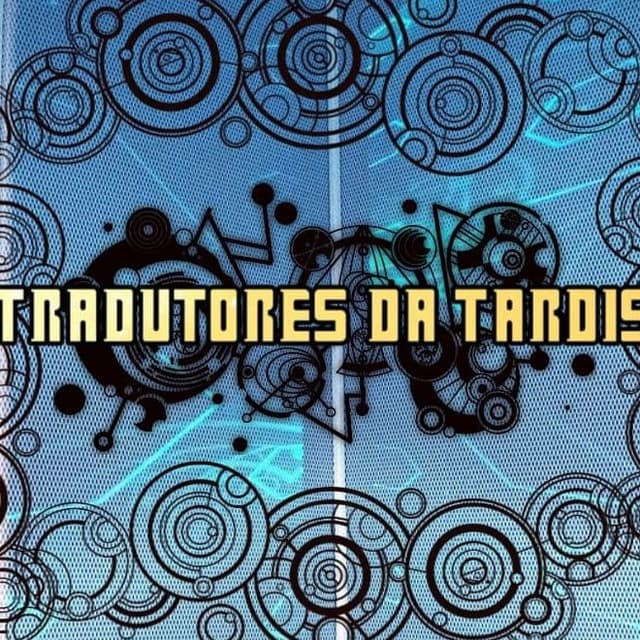

O Tradutores da Tardis é o projeto de Doctor Who mais importante do momento, legendando e abrindo possibilidades para novos whovians entrarem nesse universo maravilhoso
Navegue agora para a parte que você deseja:
Assista também a série Classíca pelo Telegram
As histórias com o (*) ao lado, são os arcos normais (sem colorização), e os que tiverem (**) são arcos que são sim coloridos, mas que não foi nossa equipe que fez, ou que são animações oficiais da BBC de arcos perdidos
Segue abaixo, todos os arcos da era Hartnell para baixar e assistir
As histórias com o (*) ao lado, são os arcos normais (sem colorização), e os que tiverem (**) são arcos que são sim coloridos, mas que não foi nossa equipe que fez, ou que são animações oficiais da BBC de arcos perdidos
Segue abaixo todos os arcos da era Throughton para baixar e assistir:
Toda a era do Terceiro Doutor está legendada no Multiverso Who. Por isso, a maioria dos links, fora um ou outro eventual, lhe rediricionará para o site.
Além disso, também deixamos links para alguns materiais extras que podem ser úteis para alguns (ou não). Todos os links que não estão no nosso domínio estarão com o (*) ao lado.
Confira os links abaixo:
Arco 051 – Spearhead From Space*
Arco 052 – Doctor Who and The Silurians*
Arco 053 – The Ambassadors of Death*
Arco 055 – Terror of The Autons*
Arco 061 – The Curse of Peladon*
Arco 066 – Carnival of Monsters*
Arco 068 – Planet of the Daleks*
Arco 071 – Invasion of the Dinossaurs*
Arco 072 – Death to the Daleks*
Toda a sua era está completa e legendada no Multiverso Who. Assim, todos os links com o (*), vão lhe rediricionar para o Multiverso Who, e portanto, não está em nosso domínio
Confira os links:
Arco 077 – The Sontaran Experiment*
Arco 078 – Genesis of the Daleks*
Arco 079 – Revenge of the Cybermen*
Arco 080 – Terror of the Zygons*
Arco 083 – The Android invasion*
Arco 084 – The Brain of Morbius*
Arco 086 – The Masque of Mandragora*
Arco 088 – The Deadly Assassin*
Arco 090 – The Robots of Death*
Arco 091 – The Talons of Weng – Chiang*
Arco 092 – Horror of Fang Rock*
Arco 093 – The Invisible Enemy*
Arco 097 – The Invasion of Time*
Arco 098 – The Ribos Operation*
Arco 100 – The Stones of Blood*
Arco 101 – The Androids of Tara*
Arco 102 – The Power of Kroll*
Arco 103 – The Armageddon Factor*
Arco 104 – Destiny of the Daleks*
Arco 106 – The Creature from the Pit*
Arco 108 – The Horns of Nimon*
Todos os links que tiverem o (*), são os que não estão em nosso domínio
Segue agora, todos os arcos do 5° Doutor:
Todos os seus episódios já foram legendados e estão disponíveis no site do Multiverso Who. Por isso, a maioria dos links aqui vão direto ao Multiverso Who.
Segue abaixo todos os arcos e histórias envolvendo o Sexto legendadas. As que tiverem o (*), é que não estarão em nosso domínio
O site Multiverso Who ainda não possui toda a era dele completa e legendada. Por isso, nós dos Tradutores da Tardis, upanos no nosso Mega todos os arcos que faltam lá. Todos os arcos que possuem o (*) são do Multiverso Who
Segue os arcos abaixo
Como uma das nossas missões principais é levar o "nichado" para o "fandom mainstream", o Tradutores traz alguns audiodramas para vocês
Aqui vai para algumas de nossas legendas para baixar, tanto de Webcasts e histórias curtas, até algunas animações de recons que sincronizamos